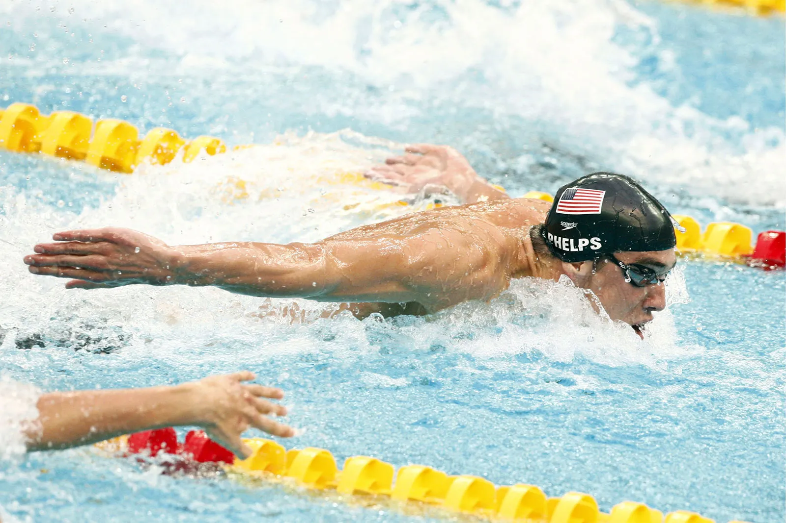

Swimming is a sport that has always held a special place in my heart. From the time I first learned to swim at a young age, I knew it was something I wanted to pursue seriously. I spent most of my high school years on the swim team at JP Stevens High School, where I developed a deep appreciation for the sport and its benefits. Swimming provided me with more than just fitness; it gave me a sense of peace and relaxation after a long day.
My favorite stroke, the breaststroke, is often seen as the slowest, but I’ve always felt a personal connection to it. The technique requires both mental and physical coordination, and mastering it was one of my greatest achievements. I enjoyed the process of working on improving my technique and was proud of the progress I made. Swimming also taught me the value of hard work and dedication. It wasn’t always easy, but the rewards were well worth the effort. Whether I was competing in swim meets or swimming for fun, it was the sport that kept me grounded and focused.
Today, I continue to enjoy swimming, whether in the pool or outdoors. It’s not just about competing; it’s a way for me to connect with my body and relax my mind. Swimming will always be an important part of who I am.
